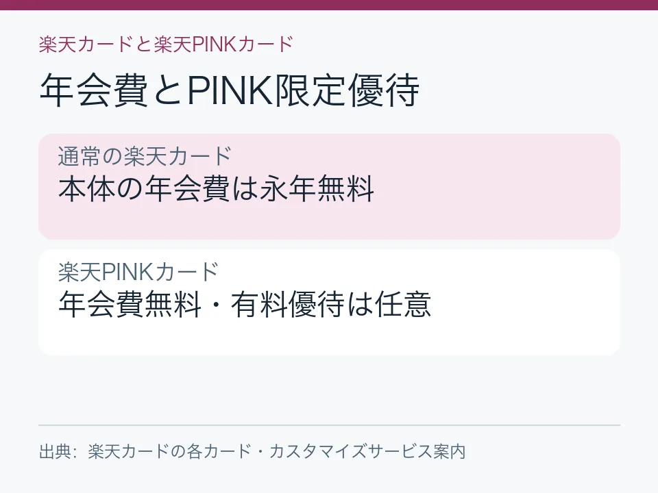
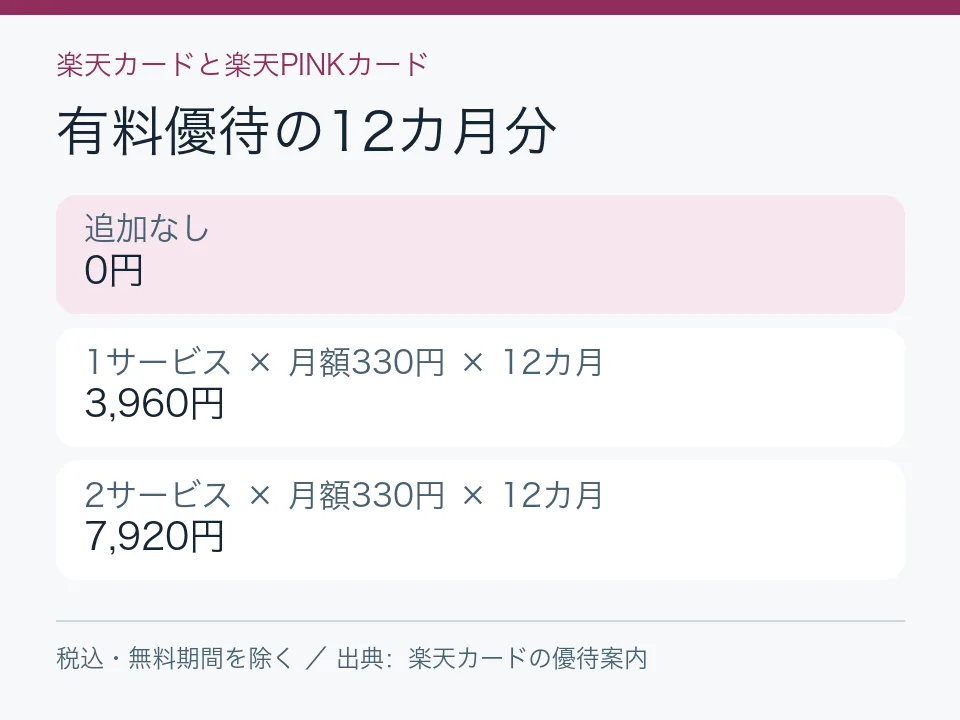

楽天PINKカードと楽天カードの違いは、主に選べる券面と任意で申し込めるカスタマイズ特典です。どちらもカード本体の年会費は永年無料です。楽天PINKカードで月額330円（税込）の優待を申し込む場合は、使う特典の金額と料金を比べて選びます。料金・条件は2026年11月24日時点の公式案内に基づきます。
01楽天PINKカードと楽天カードの違い
| 比較項目 | 楽天カード | 楽天PINKカード |
|---|---|---|
| カード本体の年会費 | 永年無料 | 永年無料 |
| デザイン | 楽天カードの券面から選択 | ピンクを基調とする券面から選択 |
| 楽天PINKカード限定優待 | 対象外 | 希望者が申し込める |
| 優待の追加料金 | 該当なし | 選んだサービスの月額料金がかかる |

本体を年会費無料で使うなら、カード選びと有料優待の申込みは別々に判断できます。 好きなデザインを選ぶ場合は、券面ごとに選べる国際ブランドを確認してください。楽天PINKカードのディズニー・デザインはJCBのみです。支払う日を先に把握したい場合は、クレジットカードの締め日と支払い日の比較の楽天カード欄で確認できます。
02月額330円の優待はいくら使えば見合う？
楽天グループ優待サービスは楽天グループ内のクーポンなどを提供します。RAKUTEN PINKY LIFEは飲食店、映画などの優待を扱います。どちらも月額330円（税込）です。補償のための楽天PINKサポートは別の選択肢なので、以下の月額優待の試算から外しています。
| 有料期間の前提 | 計算式 | 12カ月分 |
|---|---|---|
| 月額優待を付けない | 0円 | 0円 |
| 月額優待を片方だけ継続 | 330円 × 12カ月 | 3,960円 |
| 月額優待を両方とも継続 | 330円 × 2サービス × 12カ月 | 7,920円 |

優待でいくら値引きされるかは、普段の買い物や予約を置き換えられるかで考えます。 例えば、もともと予定していた買い物で1年間に計3,000円の値引きを受けられると仮定します。片方を12カ月有料で使うと、3,000円－3,960円＝－960円です。値引き額が計4,500円なら、4,500円－3,960円＝540円です。いずれも計算例で、実際に使えるクーポンや適用額は利用条件によって変わります。
03有料優待はどこで選ぶ？
- 過去の支出を見て、今後も利用する楽天グループのサービスや映画館、飲食店を絞ります。
- 楽天グループ優待サービスとRAKUTEN PINKY LIFEのうち、利用予定のある方から、対象施設や対象日、利用回数の条件を見ます。RAKUTEN PINKY LIFEの優待は、施設ごとの利用規則も確認してください。
- 条件を満たせる値引きだけを合計し、有料期間の月額合計と比べます。同じ買い物では利用できない優待や、利用するために新たな支出が必要な優待を入れないようにします。
- 楽天PINKカードを作った後でも楽天e-NAVIから申し込めます。申込画面で無料期間と有料になる時期を確認してから選びます。
注意2つの月額優待の無料期間は、それぞれ初めて申し込む場合に利用開始月を含め最大2カ月です。利用を始めた日から一定の日数を数える方式とは限らないので、申込画面の条件を控えておきます。
04よくある質問
楽天PINKカードは年会費が有料ですか？
カード本体は永年無料です。任意の月額優待に申し込んだ場合は、選んだ優待の料金がかかります。
楽天PINKカードの優待は後から申し込めますか？
カード入会後も楽天e-NAVIから申し込めます。利用条件は申込み時に確認してください。
通常の楽天カードでもPINK限定優待を使えますか？
PINK限定のカスタマイズサービスは楽天PINKカードの保有者向けです。
05まとめ
結論楽天カードと楽天PINKカードは、選べる券面とPINK限定の優待が主な違いです。月額優待を付ける場合は、有料期間の合計と、普段の支出で使える値引きの合計を比べてください。